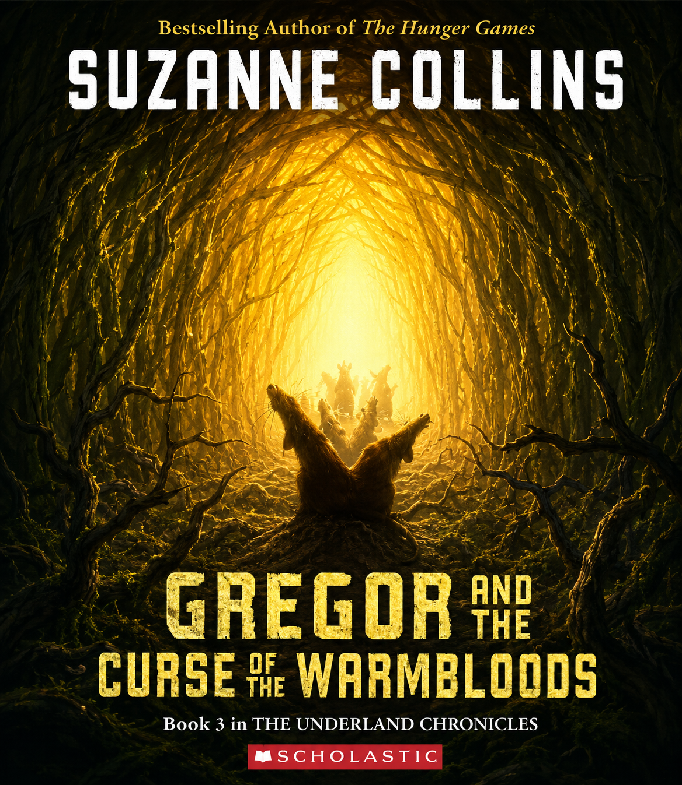
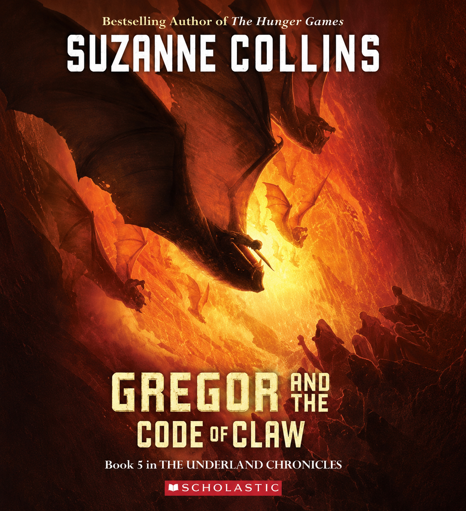

Home
Home
 About
About
Obras da Autora

The Hunger Games
2008Na ruína do que outrora foi a América do Norte, doze distritos são forçados a enviar um garoto e uma garota para competir nos Jogos Vorazes.

Catching Fire
2009Contra todas as probabilidades, Katniss Everdeen sobreviveu aos Jogos Vorazes. Mas a vitória brings reviravoltas perigosas e o início de uma rebelião.

Mockingjay
2010O ato final da revolução. Katniss aceita seu papel como o Tordo para unificar os distritos contra a opressão da Capital, custe o que custar.

The Ballad of Songbirds and Snakes
2020Anos antes de se tornar o presidente tirânico de Panem, Coriolanus Snow, aos dezoito anos, vê uma chance de mudar sua sorte ao ser mentor nos Jogos.

Gregor the Overlander
2003Quando Gregor cai através de uma grade na lavanderia de seu prédio em Nova York, ele descobre o sombrio Subterrâneo, um mundo à beira da guerra.

Gregor and the Prophecy of Bane
2004Gregor é chamado de volta ao Subterrâneo para cumprir uma nova profecia, desta vez envolvendo o sequestro de sua irmãzinha, Boots.

Gregor and the Curse of the Warmbloods
2005Uma praga biológica mortal está se espalhando pelo Subterrâneo. Gregor deve correr contra o tempo para decifrar a profecia e encontrar a cura.
Gregor and the Marks of Secret
2006Comunidades inteiras de criaturas estão desaparecendo misteriosamente no Subterrâneo. Gregor e seus amigos partem para investigar uma terrível ameaça.

Gregor and the Code of Claw
2007O confronto final no Subterrâneo começou. Gregor precisará reunir toda a sua coragem para liderar a última resistência e proteger sua família.

Year of the Jungle
2013Um livro infantil autobiográfico baseado no período em que o pai de Suzanne Collins foi enviado para lutar na Guerra do Vietnã.

SUNRISE ON THE REAPING
2025De volta ao mundo de Panem, este prelúdio acompanha os eventos que antecederam o Segundo Massacre Quaternário, explorando a juventude e os traumas do icônico mentor Haymitch Abernathy.

When Charlie McButton Lost Power
2005Um livro infantil super divertido ilustrado que conta a história de um garoto viciado em jogos de computador que perde o controle quando falta energia.